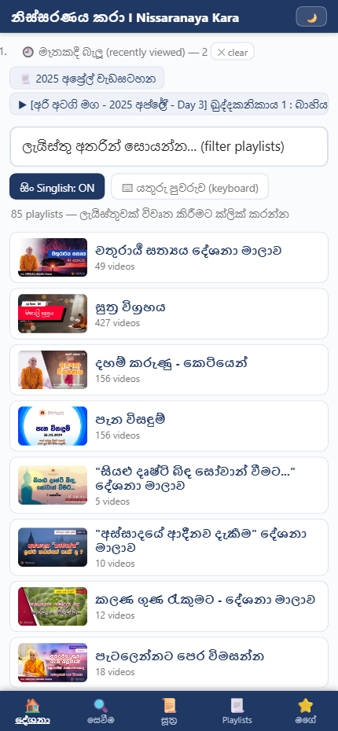
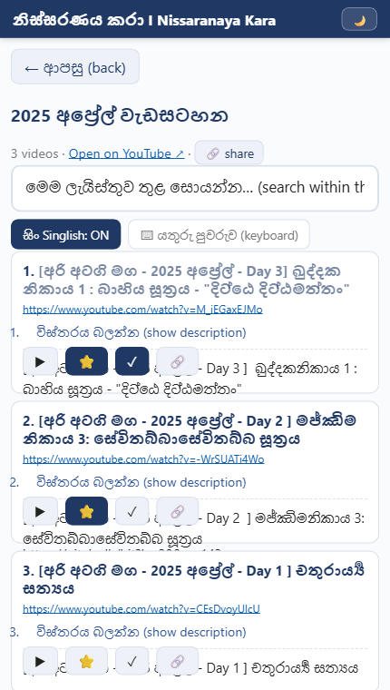
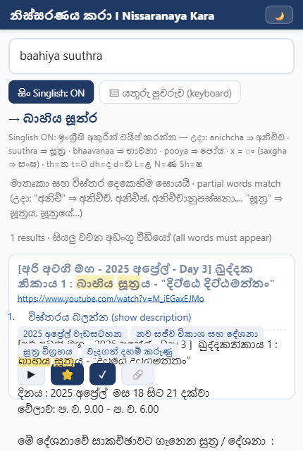
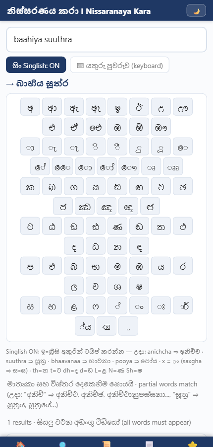
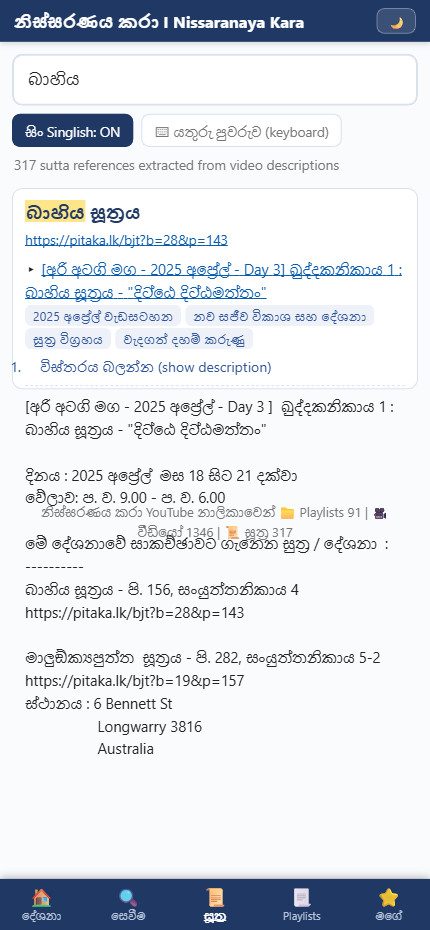
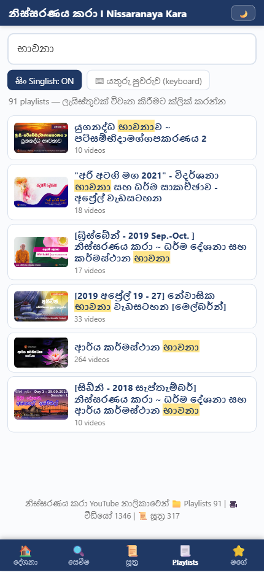
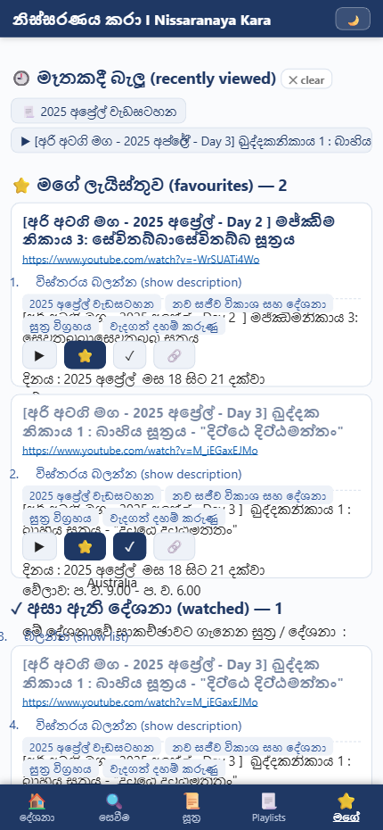
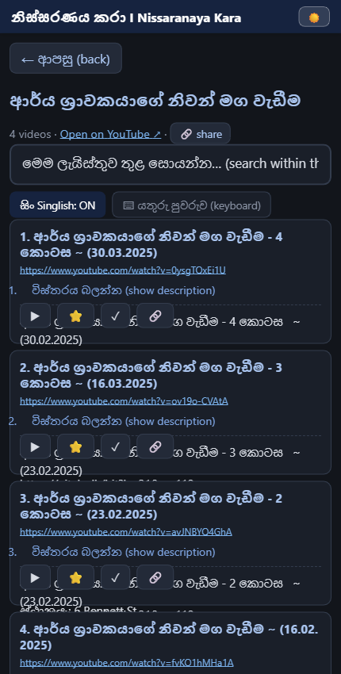

1. හැඳින්වීම
මෙම යෙදුම නිස්සරණය කරා I Nissaranaya Kara YouTube නාලිකාවේ සියලුම ධර්ම දේශනා පහසුවෙන් සොයා ගැනීමට, ඇසීමට සහ පිළිවෙළකට බලා ගැනීමට සකසන ලද්දකි. නාලිකාවේ 📁 ධාවන ලැයිස්තු (playlists) 91ක්, 🎥 වීඩියෝ 1,346ක් සහ 📜 සූත්ර නාමාවලියක් මෙහි ඇතුළත් ය.
යෙදුම ක්රියා කරන්නේ වෙබ් බ්රව්සරයක් තුළ ය — කිසිවක් මිලදී ගැනීමට හෝ ලියාපදිංචි වීමට අවශ්ය නැත. පහළින් ඇති ටැබ් පහ (📱 දුරකථනයේ නම් තිරයේ පහළම පේළිය) මගින් ප්රධාන කොටස් අතර මාරු විය හැක.
2. දුරකථනයට ස්ථාපනය කිරීම (install)
Android (Chrome)
1. Chrome බ්රව්සරයෙන් යෙදුමේ ලිපිනය විවෘත කරන්න. 2. ⋮ මෙනුවෙන් "Add to Home screen" හෝ "Install app" තෝරන්න. 3. එවිට යෙදුම සාමාන්ය app එකක් මෙන් home screen එකට එක් වේ.
iPhone (Safari)
Safari වෙතින් විවෘත කර, Share බොත්තම ඔබා "Add to Home Screen" තෝරන්න.
3. පොදු අංග — සෑම වීඩියෝ එකකම ඇති බොත්තම්
ඕනෑම තැනක වීඩියෝවක් දිස්වන විට ඒ යටින් මෙම බොත්තම් හතර ඇත (දුරකථනයේ දී අයිකන පමණක් පෙනේ):
| බොත්තම | ක්රියාව |
|---|---|
| ▶ play | වීඩියෝව YouTube වෙත නොගොස් එතැනම වාදනය කරයි. නැවත එබූ විට වසයි. |
| ⭐ එකතු කරන්න | වීඩියෝව මගේ ලැයිස්තුවට (favourites) එක් කරයි / ඉවත් කරයි. |
| ✓ අසා ඇත | අසා අවසන් දේශනා ලකුණු කරයි. ලකුණු කළ දේශනා වල මාතෘකාව ලා පැහැයෙන් පෙනේ. ▶ මගින් වාදනය කළ විට ස්වයංක්රීයව ලකුණු වේ. |
| 🔗 share | වීඩියෝ ලින්ක් එක WhatsApp ආදියෙන් බෙදාගැනීමට (දුරකථනයේ) හෝ copy කිරීමට (පරිගණකයේ). |
ඊට අමතරව: විස්තරය බලන්න (show description) ලින්ක් එක එබූ විට වීඩියෝවේ සම්පූර්ණ විස්තරය — සූත්ර යොමු, pitaka.lk ලින්ක්, දිනය, ස්ථානය ආදිය — දිග හැරේ. වීඩියෝ මාතෘකාව එබුවහොත් YouTube හි විවෘත වේ.
4. 🏠 සදහම් දේශනා සහ පැන විසඳුම් (මුල් පිටුව)

යෙදුම විවෘත වන විට පෙනෙන ප්රධාන පිටුව මෙයයි. ධර්ම දේශනා හා පැන විසඳුම් අඩංගු ලැයිස්තු 85ක්, වැදගත්ම දේශනා මාලා (චතුරාර්ය සත්යය, සුත්ර විග්රහය, දහම් කරුණු, පැන විසඳුම් ආදිය) මුලින්ම එන පිළිවෙළට සකසා ඇත.
🕘 මෑතකදී බැලූ — ඉහළින්ම ඇති මෙම තීරුව එබූ විට, ඔබ අවසන් වරට බැලූ ලැයිස්තු හා වීඩියෝ (උපරිම 12ක්) දිග හැරේ. ✕ clear මගින් හිස් කළ හැක.
සෙවුම් කොටුව — ලැයිස්තු නම අනුව ක්ෂණිකව පෙරයි (filter). Singlish බොත්තම හා යතුරු පුවරුව මෙහිදී ද භාවිත කළ හැක (5 වන කොටස බලන්න).
ලැයිස්තුවක් එබූ විට එහි සියලු වීඩියෝ දිස්වේ:

මෙහි ← ආපසු (back) මගින් පෙර පිටුවට යා හැක. "මෙම ලැයිස්තුව තුළ සොයන්න" කොටුව මගින් විශාල ලැයිස්තුවක (උදා: වැදගත් දහම් කරුණු — වීඩියෝ 580) අවශ්ය දේශනාව ඉක්මනින් සොයා ගත හැක. 🔗 share මගින් සම්පූර්ණ ලැයිස්තුවම බෙදාගත හැක.
5. 🔍 දේශනා නම් සහ අන්තර්ගතය සෙවීම

මෙය යෙදුමේ බලවත්ම අංගයයි. වීඩියෝ 1,346ක මාතෘකා සහ විස්තර දෙකෙහිම ඕනෑම සිංහල වචනයක් සොයයි. සොයාගත් වචන කහ පැහැයෙන් highlight වේ.
Singlish මගින් සිංහල ටයිප් කිරීම
සිංහල යතුරු පුවරුවක් නොමැති වුව ද, ඉංග්රීසි අකුරින් ශබ්දානුකූලව ටයිප් කළ විට ස්වයංක්රීයව සිංහලට හැරේ (කොටුව යට "→" ලකුණින් පෙන්වයි):
| ටයිප් කරන්නේ | ලැබෙන්නේ |
|---|---|
anichcha | අනිච්ච |
suuthra | සූත්ර |
bhaavanaa | භාවනා |
saxgha (x = ං) | සංඝ |
ප්රධාන නීති: th=ත, t=ට, dh=ද, d=ඩ,
L=ළ, N=ණ, Sh=ෂ, aa=ා, ii=ී,
uu=ූ, oo=ෝ, x=ං.
ඉංග්රීසි වචනයක් සෙවීමට නම් සිං Singlish: ON බොත්තම ඔබා OFF කරන්න.
සිංහල යතුරු පුවරුව

⌨ යතුරු පුවරුව (keyboard) බොත්තමෙන් තිරය මත සිංහල යතුරු පුවරුවක් විවෘත වේ — Singlish වලින් ලිවීමට අපහසු අකුරු (ඟ, ඬ, ඳ, ්ර, ්ය ආදිය) සඳහා ප්රයෝජනවත් ය.
6. 📜 සූත්ර නාමාවලිය

දේශනා විස්තර වලින් උපුටාගත් සූත්ර 317ක නාමාවලියකි. එක් එක් සූත්රය යටතේ:
▸ සූත්ර පාඨය කියවීමට pitaka.lk / thripitakaya.org ලින්ක් · ▸ එම සූත්රය විග්රහ වන දේශනා (වීඩියෝ) · ▸ ඒවා අයත් ලැයිස්තු වෙත යා හැකි ටැග්
ඉහළ සෙවුම් කොටුවෙන් සූත්ර නාමයෙන් පෙරා ගත හැක — Singlish ද ක්රියා කරයි
(baahiya → බාහිය).
7. 📃 සියළු YouTube ධාවන ලැයිස්තු (Playlists)

නාලිකාවේ සියලුම ධාවන ලැයිස්තු 91 මෙහි ඇත — මුල් පිටුවේ නොමැති සත්බුදු වන්දනාව, බුද්ධ පූජා, පුණ්යානුමෝදනා, ආර්ය කර්මස්ථාන භාවනා ආදිය ද ඇතුළුව. ක්රියාකාරිත්වය මුල් පිටුවට සමාන ය.
8. ⭐ මගේ ලැයිස්තුව

ඔබේම පෞද්ගලික පිටුව — කොටස් තුනකි:
🕘 මෑතකදී බැලූ — අවසන් වරට බැලූ ලැයිස්තු/වීඩියෝ 12 · ⭐ මගේ ලැයිස්තුව — ⭐ බොත්තමෙන් එකතු කළ ප්රියතම දේශනා · ✓ අසා ඇති දේශනා — ලකුණු කළ දේශනා ලැයිස්තුව
9. 🌙 අඳුරු තේමාව (dark mode)

ඉහළ දකුණු කෙළවරේ 🌙 බොත්තම එබූ විට අඳුරු තේමාවට මාරු වේ; ☀️ මගින් නැවත ආලෝකවත් තේමාවට. ඔබේ තේරීම යෙදුම මතක තබා ගනී. පළමු වරට විවෘත කරන විට දුරකථනයේ system theme එක අනුගමනය කරයි.
10. නිතර අසන පැන
අන්තර්ජාලය නොමැතිව ක්රියා කරයි ද?
ඔව් — ස්ථාපනය කර පළමු වරට online විවෘත කළ පසු, ලැයිස්තු බැලීම, සෙවීම, විස්තර කියවීම සියල්ල offline ක්රියා කරයි. වීඩියෝ වාදනයට හා thumbnail පින්තූර වලට පමණක් අන්තර්ජාලය අවශ්ය ය.
මගේ තොරතුරු කිසිවක් රැස් කරනවා ද?
නැත. ලියාපදිංචියක්, පිවිසුමක් (login) හෝ දත්ත රැස්කිරීමක් නොමැත. ප්රියතම ලැයිස්තු ආදිය ඔබේ උපකරණයේම තැන්පත් වේ.
නාලිකාවට අලුත් දේශනා එකතු වූ විට?
යෙදුමේ දත්ත යාවත්කාලීන කළ විට, ස්ථාපිත යෙදුම් ඊළඟ online විවෘත කිරීමේදී ස්වයංක්රීයවම අලුත් දත්ත ලබා ගනී — ඔබ කිසිවක් කළ යුතු නැත.
Back බොත්තම ක්රියා කරයි ද?
ඔව් — දුරකථනයේ/බ්රව්සරයේ back බොත්තම යෙදුම තුළ පෙර පිටුවට ගෙන යයි. යෙදුම තුළ ඇති ← ආපසු (back) බොත්තම ද එසේම ය.